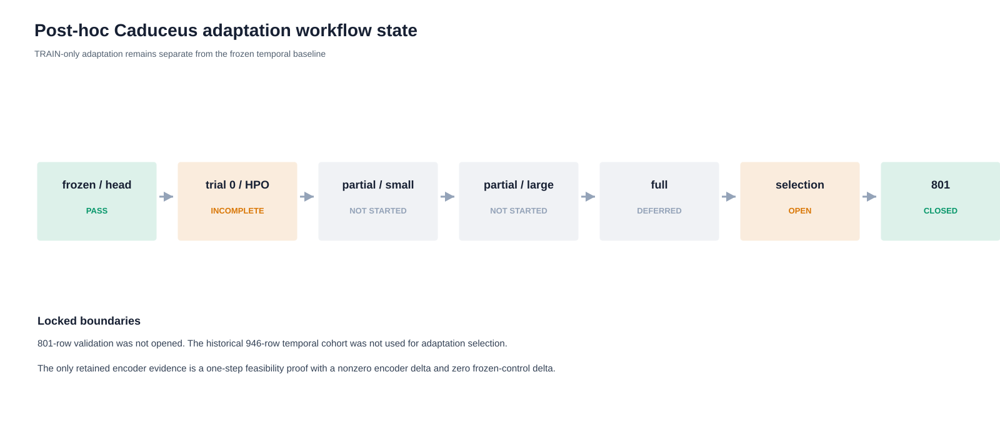
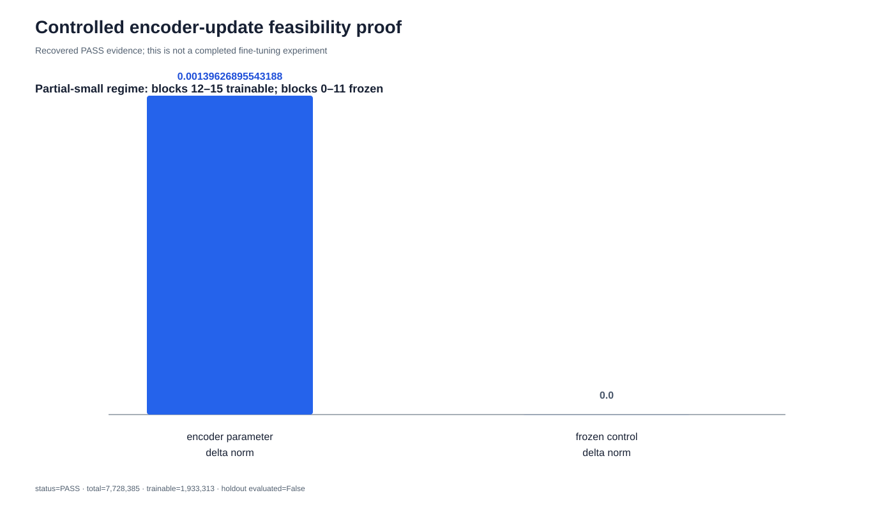
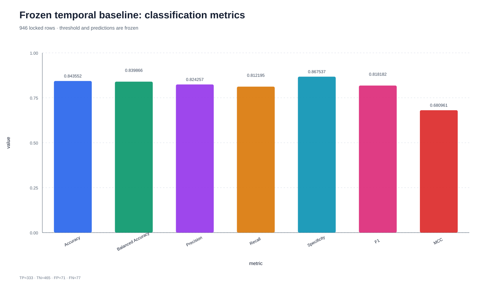
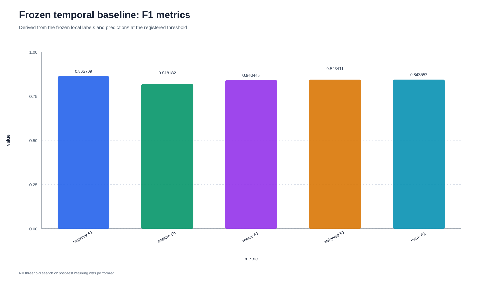
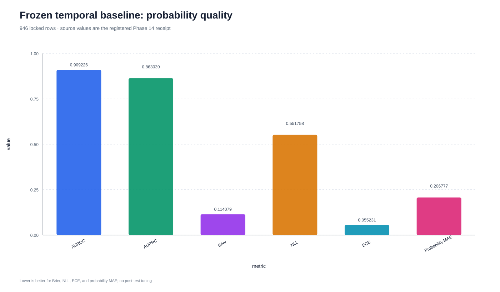

Final polish additions
research/adaptation_attempt/figures/adaptation_workflow.svg

research/adaptation_attempt/figures/encoder_update_proof.svg

research/figures/final/final_classification_metrics.svg

research/figures/final/final_f1_metrics.svg

research/figures/final/final_probability_quality.svg
